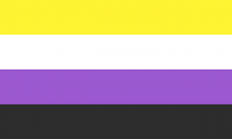

Marcos Bagno, Preconceito línguistico- o que é, e como se faz "A língua é um enorme iceberg flutuando no mar do tempo, e a gramática normativa é a tentiva de descrever apenas uma parcela mais vísivel dele, a chamada norma-padrão"
O pronome neutro se trata da autoafirmação de pessoas que estão fora do aspecto binário de gênero, ou a cisnormatividade, logo não se identificam com nenhum dos dois.
A língua é uma prática social profundamente permeada pelas disputas de poder e de hegemonia ideológica que se travam na sociedade.Logo, é preciso questionar o por quê dela adotar o gênero masculino como "universal".
A língua portuguesa é sexista e binarista , assim como nossa realidade é, logo a forma como nos expressamos reproduz essas desigualdades. 
Aqueles que defendem o uso da linguagem neutra e inclusiva acreditam que isso colabora para 1.Denunciar o machismo e a intolerância de gênero 2.Visibilizar e identificar todos os gêneros, inclusive aqueles que se identificam com gêneros neutros 3.Valorizar, respeitar e acolher a diversidade 4.Não privilegiar um grupo de índividuos(Homens) em detrimento de outros(Mulheres e a comundade Lgbt+) 5.Gerar reflexão sobre a desigualdade de gênero em outros âmbitos para além da linguagem.